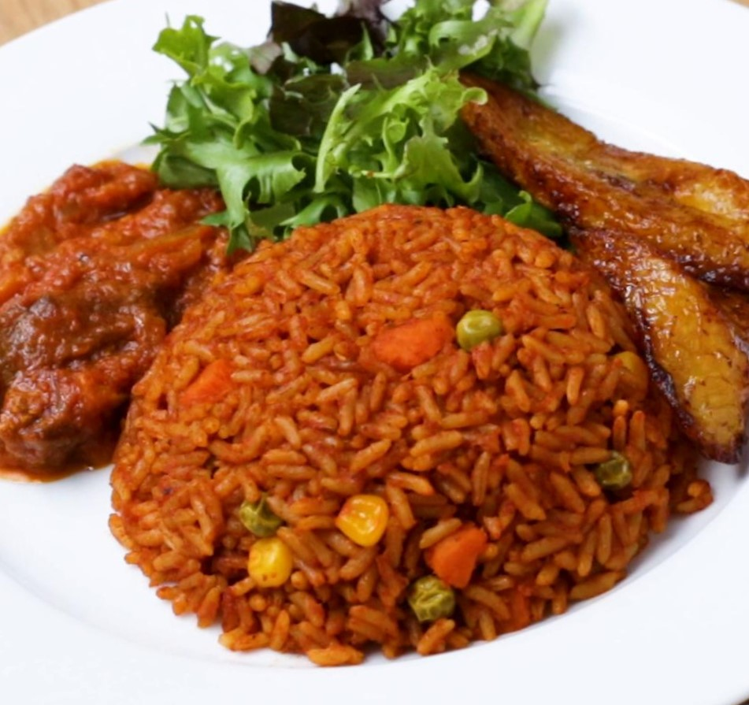

1 large red bell pepper, seeded and roughly chopped
1 whole habanero pepper, stem removed
1 whole Fresno chili, or jalapeño, stem removed
4 cloves garlic, peeled
1 tablespoon minced ginger
2 cups water
Rice:
1/3 cup olive oil
1 red onion, diced
1 teaspoon salt, plus more to taste
1/4 cup tomato paste
2 tablespoons smoked paprika
1 teaspoon curry powder
1 teaspoon cumin
1 teaspoon dried thyme
1/2 teaspoon freshly ground black pepper
1/4 teaspoon turmeric
2 1/4 cups basmati rice
1 bay leaf
1 tablespoon chicken bouillon paste
1/4 cup chopped green onion for garnish (optional)
1/4 cup chopped cilantro, for garnish (optional)

Fufu:
1 pound cassava, (I used 1 cassava for this recipe)
1 pound plantains, it’s best to use the plantains that are not completely ripe. I used 2 plantains
for this recipe
water
salt and pepper, to taste
Instructions:
Rinse the cassava and plantains with cold water. Peel the skin and cut them into chunks.
In a saucepan add water and bring it to boil.
Add cassava and plantain pieces, and boil them for about 15-20 minutes until they're soft. Test by
piercing with a fork after 15 minutes. If they are tender and break easily, they are ready.
Transfer the pieces to a food processor or blender using a slotted spoon.
Pulse to blend, adding water GRADUALLY, until it reaches your desired consistency. It's important to
add small amount of water each time.
Transfer the mixture into a bowl. Season with salt and pepper to taste. Mix until the fufu is thick
and smooth.
Place a piece of plastic wrap on the counter, and take about 2 spoons of the mixture to the middle
of the wrap. Shape it into balls. Repeat with the rest of the dough. You'll get about 8-10 fufu balls. Serve them with
stew or soup.